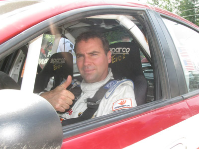
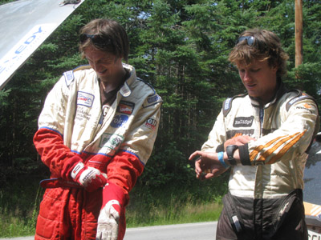
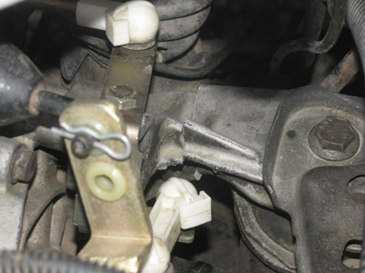
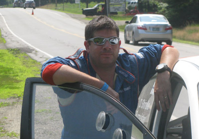

Lauchlin O'Sullivan, Driver, #90 Dodge SRT-4 – The first two stages went OK, he doesn't feel like he's in it yet. Today is just kind of getting back into it. It's been so long, it's just tough to come back to rally overall. It's just feeling kind of funky today. They were really fast stages, and he just wasn't committed, and that's where it's got to be on those 5's and 6's over crests, he just wasn't as committed as it should be. It gets a bit interesting out here, and he needs to be clean on the rough stages coming up. He's got a nice little lead. There are some rough areas in the next 16 mile stages. They broke two rims yesterday and didn't even know it. He plans to keep it clean and fast, and just do his thing. With the lead they don't really need to push too much.
Lauchlin O'Sullivan
Catherine Woods, Co-Driver, #70 Scion XD – The first two stages were really fast and flat-out, lot's of 6's and 5's, she thinks Dillon and O'Sullivan put some time on them because they have so much more horsepower. Dillon has about twice their horsepower, and O'Sullivan three times their horsepower. They went flat out, but she thinks on the next couple stages they're going to take some time off Dillon and Wimpey hopefully, the stages are more technical.
Ben Slocum, Co-Driver, #600 Ford Focus – The first two stages went pretty good, they're going pretty fast, they're actually driving the suspension off the car. They're going to get everything tightened up in service and head out for the set of rough stages, but the fast , smooth stuff really seemed to work for them.
Josh & Jeremy Wimpey
Jeremy Wimpey, Co-Driver, #213 VW GTI – They discovered they have a broken motor mount, they weren't sure exactly when it happened. They heard a clunk yesterday. They tried to change some control arm last night, they thought the bushings were bad. This might have been broken and they just overlooked it. They'll get it changed in service and hopefully the clunking will go away. The first two stages went great, Lauchlin still put time on them, but they had respectable times considering how fast the stages were. They got a bunch of time on Duplessis and a good chunk of time on Van Way. Hopefully they'll keep that going this afternoon.
The Wimpey's motor mount.
Eric Burmeister Driver, #42 Mazdaspeed3 – The first two stages went much better than they ended last night. Last night they had something stuck in a wheel or something that felt like they had broken rear suspension for a good many miles and they lost a minute. He finally turned it on in the stages they just did, and Josh beat him by two seconds. It's good MaxAttack! competition. The stages coming up are a little rougher, but the car's built tough and they've got pretty decent notes, so he's planning on driving hard.
Dave Shindle
The Top 10 after eight stages are:
1. O'Sullivan/Wagner, Dodge SRT-4, 43:36.4
2. Van Way/Slocum, Ford Focus, 46:06.3
3. Duplessis/Woods, Scion XD, 46:12.8
4. Wimpey/Wimpey, VW, 46:35.8
5. Burmeister/Shindle, Mazda, 46:41.5
6. Healey/Johnson, Datsun, 47:41.6
7. Caswell/Donlin, BMW, 48:36.8
8. Carven/Clark, VW, 49:50.8
9. Topping/Secor, Volvo, 51:33.0
10. Detota/Smith, Subaru, 51:47.2
Matt Bushore is reported as out, but details are not available.